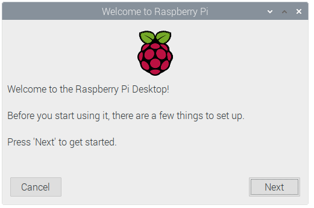

හරි ඉතින් කලෙකින් අපේ viewers ලත් නෑ කමක් නැ එහෙම එන්න නම් මම ලියන්න එපා සෙම හැදිල අමරු වුන නිසා මට මේක ටිකක් නවත්වන්න වුනා ඉතින් අද මම space පැත්තෙන් ඔබ්බට ගිහිල්ල raspberry pi එහෙමත් නැත්නම් micro controller ගැන කතා කරනවා ඉතින් මම කලින් කතා කරල තියෙනවා raspberry pi එකේ unboxing වගේ දේවල් බලල නැත්නම් මේක බලන්න
ok ඉතින් මම අද කතා කරන්නේ කොහොමද මේ raspberry pi එකට os එකක් boot කරන්නේ කියල ඉතින් ඒකට ඔයා ගන්න kit එකත් බලපානවා නැ මම එහෙම කිව්වේ මම ගත්ත kit එකේ ඒකටම කියල sd card එකක් ආවා ඒක නිස අපහු වෙනම ගන්න වුනෙ නැ
ඉතින් මම ගත්ත එකෙ තවත් එක හොදක් වෙනේ ඒකෙ noob කියන imager එක ඒ අයම install කරල එවල තිබ්බ මෙහෙම නේ ඒ කියන්නෙ ක්රම දෙකක් තියෙනවා raspberry pi වලට os එකක් install කරන්න
ඉතින් ඔය දෙකම ලෙසි අරක insatall කරල ආපු නිසා මට මහ ගොඩක් වැඩ කරන්න ඕනෙ වුනේ නැ but මම pc එකෙන් pi imager එකත් එක්ක වැඩ කරන විදියත් කියල දෙන්නම්
ඉතින් මේකෙ noob එකෙන් ඕනේ os එක select කරල

install button එක click කරන්න

මද වේලවක් රැදි ඉන්න ඒ වුනාට ගොඩක් වෙලා

අන්තිමේදි os එකක් install වෙලා කියල massage එක එනවා
ඊට පස්සෙ සමහර විට retart කරන එක හදයි ඊට පස්සේ boot වෙලා open වෙයි
ඕගොල්ලො වෙනම sd card එකක් ගත්තනම් ඕගොල්ලො යන්න raspberry pi website එකට
https://www.raspberrypi.org.
ගිහිල්ල noob එක download කරනවාට වඩා වෙන ක්රමත් තියෙනවා අපි imager එක use කරමු
https://www.raspberrypi.com/software/
මෙන්න මෙතනින් download කරගන්න
ඉතින් ඊට පස්සේ ඕගොල්ලෝ මේ විඩියෝ එකෙ තියෙන විදිය follow කරන්න
ඉතින් ඊට පස්සේ මේ sd card එක ඔග්ගොලො raspberry pi එකට plug කරල display ඔක්කොම ready කරගෙන වැඩ පටන් ගන්න ඒක boot වෙලා ඊට පස්සේ
ඉතින් මේ link එකේ තියෙන විදියට ඔක්කොම setup කරගන්න
https://projects.raspberrypi.org/en/projects/raspberry-pi-setting-up/3
after ඔක්කොම ready කරල power on කරන්න
ඊට පස්සේ මෙහෙම screen එකෙ boot වෙනව පෙනෙයි ඊට පස්සේ ඒක ඉවර වෙල after few second

ඊට පස්සේ මේ screen එක appear වෙයි
ඊට පස්සේ තව setting ටිකක් හදන්න එයි මෙන්න මේ වගේ
මේක next කරන්න

ඔයාට අදාල එවා පුරවල next button එක click කරන්න

දැන් ඔයාට ඕන password එහෙම select වෙලා next කරන්න ආආ තව එකක් මේ දෙන ඒව හොදට මතක තිය ගන්න pc එක on කරද්දි ඕන වෙනවා

මෙතනින් ඕගොල්ලොගේ wifi network එක select කරගන්න ඊට පස්සේ password එහෙම ගහලා
connect කරගන්න ඊට පස්සේ next දෙන්න

මේ විදියට ආවට පස්සේ ඕගොල්ලො ටිකක් වෙල ඉන්න after all is ready and experiance your new os .

sry හොදේ මෙහෙමත් ඊට පස්සෙ ඔක්කොම හරි
ඉතින් තව දෙයක් කලින් ඒවයි මෙකයි පටල ගන්න නම් එපා
created with
Website Builder Software .